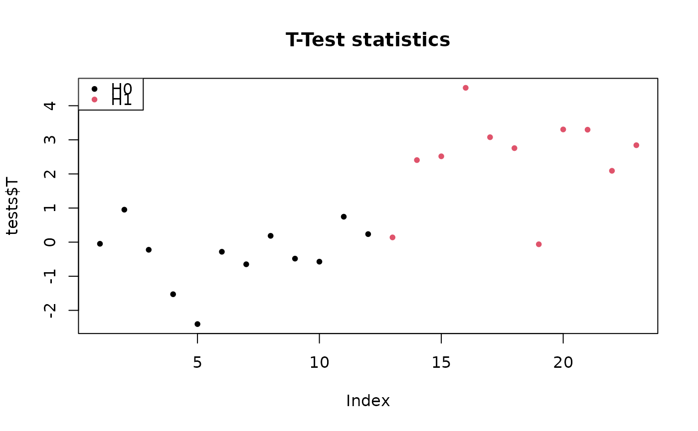
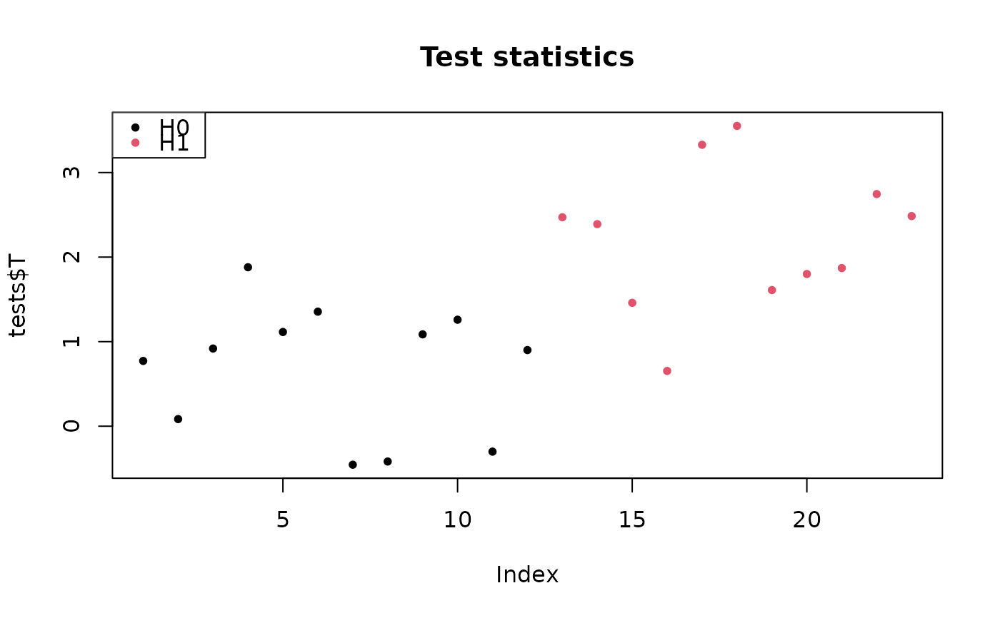
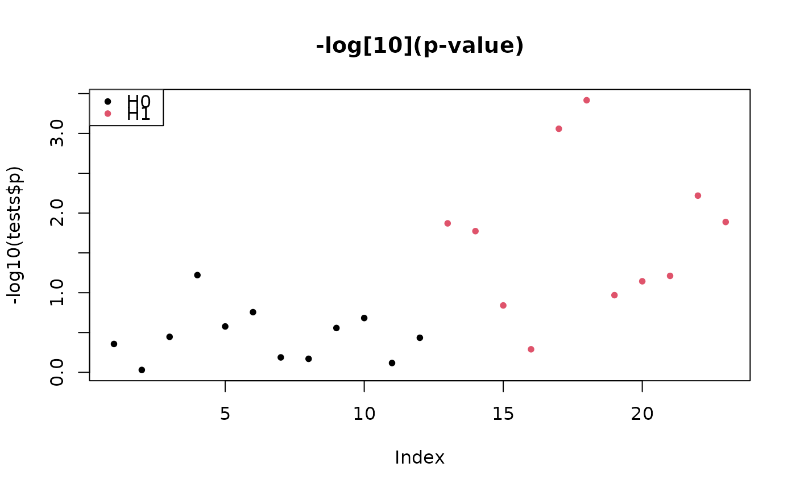
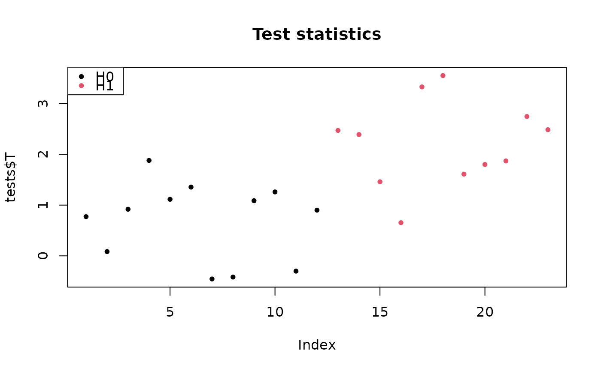
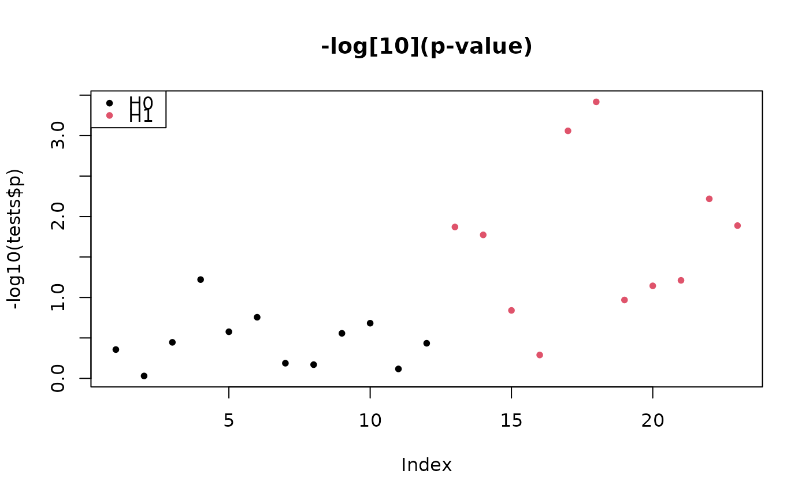

Randomization-based testing using permutation or sign-flipping
testByRandomization(
X,
categ,
B,
alternative = c("two.sided", "less", "greater"),
rowTestFUN = rowWelchTests,
rand.p.value = FALSE
)Arguments
- X
a matrix of
mvariables bynobservations- categ
An optional numeric vector of \(n\) values in \(0, 1\) specifying the column indices of the first and second samples. If not provided, a one-sample test is performed.
- B
A numeric value, the number of permutations to be performed
- alternative
A character string specifying the alternative hypothesis. Must be one of "two.sided" (default), "greater" or "less".
- rowTestFUN
A (vectorized) test function used in the two-sample case. Defaults to
rowWelchTests- rand.p.value
A boolean value: should randomization \(p\)-values be calculated and returned? Defaults to @FALSE
Value
a list with elements:
- T
A vector of \(m\) test statistics
- T0
A \(m \times B\) matrix of randomized test statistics
- p
A vector of \(m\) parametric \(p\)-values
- p0
A \(m \times B\) matrix of parametric \(p\)-values on randomized data
- flavor
A character value, the type of randomization performed: "perm" for permutation-based randomization in two-sample tests, and "flip" for sign-flipping-based randomization in one sample tests. See Details.
- rand.p
A vector of \(m\) \(p\)-values (only if
rand.p.valueisTRUE)- rand
A \(m \times B\) matrix of randomization \(p\)-values (only if
rand.p.valueisTRUE)
Details
The type of randomization is determined by the column names of
X. If these column names have exactly two distinct values, the
corresponding columns are interpreted as two samples and a two-sample
permutation-based test is performed (flavor "perm"). Otherwise (including
if X does not have column names), a one-sample test is performed
using sign-flipping (flavor "flip").
For permutation, we test the null hypothesis: "both groups have the same
mean" against the alternative specified by parameter alternative. By
default, the test is Welch's two-sample test for unequal variances, but
other tests may be used via the argument rowTestFUN. Permuted test
statistics are calculated by B permutations of the group labels.
Corresponding observed and permuted p-values are calculated as the
proportion of permutations (including the identity) for which the permuted
test statistic is larger than the observed test statistic.
For sign-flipping, we test the null hypothesis: "the mean is 0" against the
alternative specified by parameter alternative. We use the
(rescaled) empirical mean of the observations as a test statistic.
Sign-flipped test statistics are calculated by flipping the sign of each
observation with probability 1/2.
References
Ge, Y., Dudoit, S. and Speed, T.P., 2003. Resampling-based multiple testing for microarray data analysis. Test, 12(1), pp.1-77.
Blanchard, G., Neuvial, P., & Roquain, E. (2020). Post hoc confidence bounds on false positives using reference families. Annals of Statistics, 48(3), 1281-1303.
Examples
m <- 123
rho <- 0.2
n <- 100
pi0 <- 0.5
B <- 1e3
## two-sample data
sim <- gaussianSamples(m, rho, n, pi0, SNR = 2, prob = 0.5)
X <- sim$X
categ <-sim$categ
tests <- testByRandomization(X = X, categ = categ, B)
testsW <- testByRandomization(X = X, categ = categ, B = 10, rowTestFUN = rowWilcoxonTests)
## show test statistics
pch <- 20
colStat <- 1+sim$H
plot(tests$T, col = colStat, main = "T-Test statistics", pch = pch)
legend("topleft", c("H0", "H1"), pch=pch, col=1:2)

plot(testsW$T, col = colStat, main = "Wilcoxon test statistics", pch = pch)
legend("topleft", c("H0", "H1"), pch=pch, col=1:2)
 # one-sample data:
sim <- gaussianSamples(m, rho, n, pi0, SNR=2)
tests <- testByRandomization(X = sim$X, categ = sim$categ, B, alternative = "two.sided")
## show test statistics
pch <- 20
colStat <- 1+sim$H
plot(tests$T, col = colStat, main = "Test statistics", pch = pch)
legend("topleft", c("H0", "H1"), pch = pch, col = 1:2)

plot(-log10(tests$p), col = colStat, main = "-log[10](p-value)", pch = pch)
legend("topleft", c("H0", "H1"), pch = pch, col = 1:2)

# one-sample data:
sim <- gaussianSamples(m, rho, n, pi0, SNR=2)
tests <- testByRandomization(X = sim$X, categ = sim$categ, B, alternative = "two.sided")
## show test statistics
pch <- 20
colStat <- 1+sim$H
plot(tests$T, col = colStat, main = "Test statistics", pch = pch)
legend("topleft", c("H0", "H1"), pch = pch, col = 1:2)

plot(-log10(tests$p), col = colStat, main = "-log[10](p-value)", pch = pch)
legend("topleft", c("H0", "H1"), pch = pch, col = 1:2)
